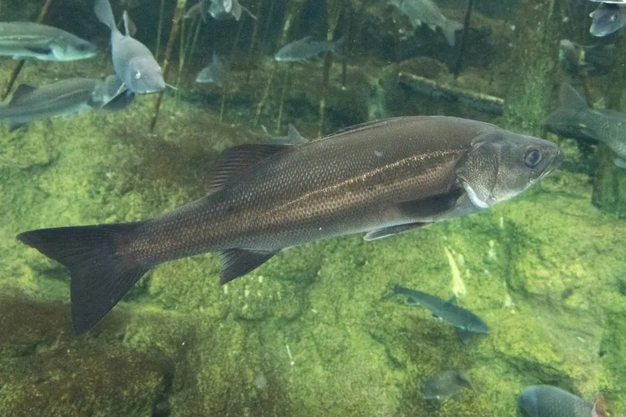

鱼类 · 动物界
海鲈 Lateolabrax japonicus

中国沿海常见的经济鱼类，体侧有黑色小斑点，肉质鲜美，可生活于海水也能进入河口，是重要的养殖和游钓鱼种。
- 分类
- 门脊索动物门纲硬骨鱼纲目鲈形目科花鲈科属花鲈属
- 栖息环境
- 近岸海域、河口和咸淡水交界处，可进入淡水生活
- 地理分布
- 中国沿海，以及日本、朝鲜半岛的近岸和河口水域
- 保护级别
- 暂无评估；中国未列入国家重点保护野生动物名录（重要养殖鱼类）
物种志
海鲈体呈纺锤形、侧扁，头大，口大，下颌稍向前突出，口中长着细齿。体色银灰，背部青灰，体侧上部散布着黑色小斑点，因此又被称为“七星鲈”。成鱼体长一般 40–70 cm，体重 1–4 kg，最大可超过 1 m、体重 10 kg 以上。
海鲈分布于中国沿海以及日本、朝鲜半岛的近岸和河口，是典型的广盐性鱼类，能在海水、咸淡水甚至淡水中生活。它是肉食性鱼类，捕食小鱼、虾蟹和头足类，性情凶猛，生长较快。繁殖期在秋冬季，亲鱼洄游到近岸海域产卵。海鲈肉质细嫩、味道鲜美，是中国沿海重要的养殖鱼类，常用海水网箱和池塘养殖，同时也是游钓爱好者喜爱的对象鱼。它与鲈形目的其他种类一起，构成了中国近海重要的经济鱼类资源。目前它没有IUCN 的正式评估，中国未将其列入国家重点保护野生动物名录。
形态与习性
- 食性肉食性，捕食小鱼、虾蟹和头足类
- 体长一般 40–70 cm，最大可超过 1 m
- 体重常见 1–4 kg，最大可超过 10 kg
- 繁殖秋冬季洄游到近岸海域产卵
- 适盐性广盐性，可在海水、咸淡水和淡水中生活
- 寿命约 10–15 年
趣味知识
- 海鲈体侧的黑色小斑点像七星，因此又被称为“七星鲈”。
- 它能在海水、咸淡水甚至淡水中生活，是典型的广盐性鱼类。
- 海鲈捕食凶猛、生长快，是中国海水养殖的重要品种。